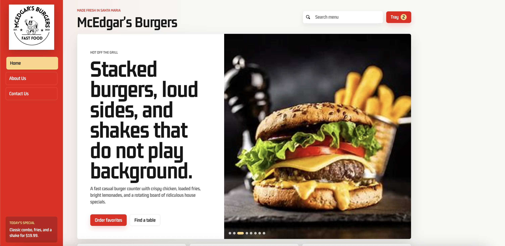
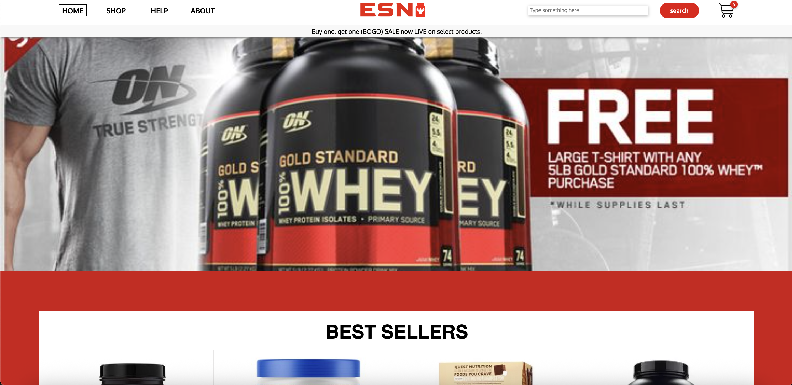

🎸 edgaroo.dev
Featured
edgaroo.dev
My personal portfolio, built first with plain HTML, CSS, and
JavaScript so I can ship quickly, keep the structure readable, and
later migrate it with a clear component map.
HTML CSS JavaScript Vercel
Each project taught me something different.
Personal Portfolio
Multi-page portfolio with a home hub, longer about story,
project filters, contact links, and music details.
HTML CSS JavaScript
Chino Valley Chamber of Commerce
SkillsUSA web design project for a local nonprofit, focused on
responsive pages, clear navigation, and community-first content.
Responsive UI Team Project Forms

McEdgar's
Restaurant concept site with a menu-heavy layout, product
imagery, category pages, and a playful brand direction.
JavaScript Menu UI Responsive

ESN Supplements
Ecommerce-style supplement storefront with product grids,
shopping pages, cart flow, and promotional sections.
Storefront Product Grid Cart UI
Virtual Zoo
Interactive school project with animal pages, location maps,
audio clips, and a simple walkthrough-style experience.
HTML Audio Interactive
Stack I work with
Skills mean more in context, so I connect them to projects above. Here's the quick list:
Languages
JavaScript Python C / C++ HTML / CSS
Frameworks
React Node.js Next.js later
Tools
Git / GitHub VS Code Vercel Linux
Interested?
Let's connect. The contact page has direct links, resume, and a simple message form.
Get in touch